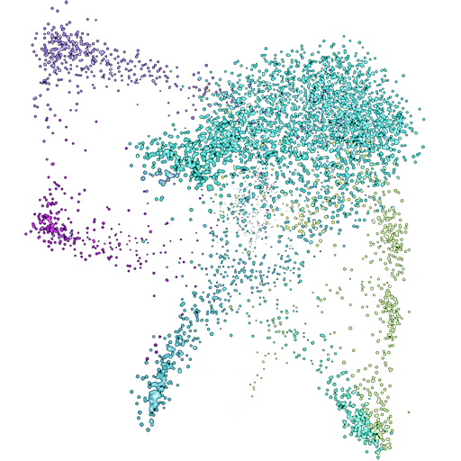

Loading data...
Loading...
n_neighbors ~ 5
REC
scAnimator

v1.2.0
Color By
▼
Filter
▼
All
None
Invert
Normalize
▼
Normalize by
Normalize Cell Counts
Gene Expression
▼
Map to: Point Size
Map to: Colormap
Map to: Intensity
Viridis
Magma
Plasma
Inferno
Rainbow
Turbo
Coolwarm
Expression Scale
Linear
Log
Quantile
Expression Intensity
1.0
Clear gene
Render Settings
▼
Point Intensity
1.0
Bloom Strength
0.0
Point Size
2
Persistence
Off
Depth of Field
Off
Tracer Length
Off
0
max
-- fps
Pause
0.0s
Morph
1x
360
1x
24 fps
30 fps
60 fps
120 fps
Duration
s
loops
Square
Legend
Native
2K
4K
Record
↺
👁
⛶